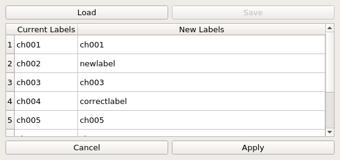

Edit Labels¶
Sometimes, the labels in the recordings are not correct (f.e. typos or some channels were changed) or might be completely uninformative (f.e. BCI2000 does not have channel labels). From the labels panel, you can edit the labels and load from a list of labels.
The column on the left shows the current (original) labels while the column on the right can be edited to change the labels. Select one label from the right-hand column and write the name of the label:
It’s crucial that the channels have unique labels, so if you use the same label twice, you cannot continue (the duplicated labels are highlighted in red):
Fix the label before proceeding:
Then, click on apply to propagate the new labels to the whole app.
Warning
Clicking apply will reset the traces and channel groups, because they are based on the labels.
You then need to create the channel groups and plot the signal. Note the updated labels:
Load Labels from File¶
You can also load the list of labels from a file on a disk. It should be a simple text file, where the labels are separated by either commas (comma-separated values), tabs, semicolon, new lines. F.e.:
newchan01, newchan02, newchan03,, newchan05
Note the double commas, meaning that channel 4 won’t be modified.
To import the labels, click on load:
And after selecting the file, you should see the changes in the list on the right. You can modify the labels further, and click apply to make the changes effective.